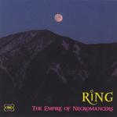

| Artist: | Ring |
| Title: | The Empire Of Necromancers |
| Label: | Musea/Poseidon FGBG 4650/PRF-036 |
| Length(s): | 48 minutes |
| Year(s) of release: | 2006 |
| Month of review: | [10/2007] |
| 1) | The Empire Of Necromancers (I. Prologue) | 11.09 |
| 2) | The Empire Of Necromancers (II. The White Sybil) | 7.14 |
| 3) | The Empire Of Necromancers (III. Piano Solo) | 1.51 |
| 4) | The Empire Of Necromancers (IV. The Desolation Of Soom) | 4.23 |
| 5) | The Empire Of Necromancers (V. Magic Lady) | 7.34 |
| 6) | The Star Of Sorrow | 4.31 |
| 7) | In Memory Of Charnades The Pan | 11.27 |
The combination of dreamy sequences, which at times would almost fit the mid seventies soft porn movies, and more strongly progressive sections with their Ange hints creates an odd blend making for something of a striking sound. The vocals are pretty sparse, luckily, since already then they clearly were the achilles heel of Japanese music, even though the fact that they are sung in the native makes them quite acceptable, despite being wobbly at times. I would call the vocals clearly above par on this one. Musically this stuff is filled out very well and quite dynamic, pulling the listener in, and arming him for what's to come...
Whereas one might refer to Ring as being Takashi Kokubo's symphonic rock band, the 1977 recorded two bonus tracks were done by Kokubo's synth outfit (Kokubo's Synthesizer Works). The former is an atmospheric, stylish track with some shards of Tony Banks. The latter starts out an experimental bit that reminds of Tomita, including the obnoxiously blaring synths and (seemingly) classical influences. It pipes down during the lengthy mid section, to blare out for its finale again. I personally feel a track like this pretty much lacks merit, both for its lack of originality and for its sound, but that could be me.
It should be noted that the limitations of the source recording are clearly audible. Despite this, the freshness of the material makes it hard to believe it was recorded in the mid seventies.